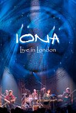

| Artist: | Iona |
| Title: | Live In London |
| Label: | Open Sky OPENSKYDVD2 |
| Length(s): | 102/ minutes |
| Year(s) of release: | 2006 |
| Month of review: | [10/2007] |
| 1) | Woven Cord | |
| 2) | Wave After Wave | |
| 3) | Inside My Heart | |
| 4) | Wind Off The Lake | |
| 5) | A Dhia Ghleigil (Angel Of God) | |
| 6) | Factory Of Magnificent Souls | |
| 7) | Encircling | |
| 8) | Strength | |
| 9) | Treasure | |
| 10) | Castlerigg | |
| 11) | Reels | |
| 12) | Irish Day | |
| 13) | Bi-Se I Part 2 | |
| 14) | Flight Of The Wild Goose | |
| 15) | Murlough Bay |
Disc two (Acoustic set)
| 1) | Chi-Rho | |
| 2) | Greenfields Of Canada | |
| 3) | Edge Of The World | |
| 4) | Jigs (Handsome Young Maidens/ Trip To Athlone) | |
| 5) | Today |
Iona is clearly a very experienced live band. The sound quality as well as the renditions are at the level of studio recordings. This in itself is great, of course, however, the performance is a bit tame due to that. The musicians are mostly on the stage just playing their music. This is mirrored in the audience, which is rather quiet in general during the songs, gently applauding between them, although there is somewhat more activity towards the end of the show. Due to this I don't get a real live feel.
The camera stand points are good, but nothing fancy. Sometimes the images are black and white, but that's the most you'll see on the level of artistry.
I've always considered Iona to be in the shadow of Mostly Autumn, whom I consider to be the most prominent band in this folky progressive with female singer vein. Iona's music is always professional, well played and composed, but it fails to move me mostly (although Encircling does have a strong section), like MA's music sometimes does. Sure, the songs are good, enjoyable, but lack that bite.
The second disc contains a half hour acoustic set recorded at the same venue right before the main programme. Along with the three guitars (acoustic of course) and the bongo type percussion Hogg uses her keyboard. I never knew Roland made acoustic keyboards. Guess they don't know themselves either. Further on, Bainbridge also moves behind his electric piano and uses his electric guitar. Despite this, the very electrically powered acoustic set does sound like a tuned down band. Especially some of the Dave & Troy stuff has a folky acoustic feel (the jigs). In this set the band play some stuff the boys did during the extended maternity leave Hogg took.
Finally we get a half hour worth of interview with all the band members giving their view on several band associated issues and questions. Due to the fact that all members are interviewed seperately there is some overlap in the answers, but it also creates an insight into the diversity of the members of this formerly-Christian-now-spiritual band. Nice to watch once.